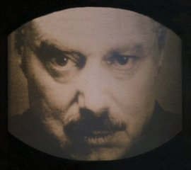
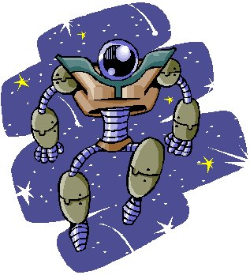

Forums galactiques > Assemblée Galactique : diplomatie officielle > Big Brother is watching you !
Pages : 1
| Big Brother Respect diplomatique : 49  18/07 ETU 23:31 | Score : 18 Détails Au milieu de l'océan urbain que formait la conurbation d'Urbicande, un simple badaud arpentait les rues salles et mal famées de la capitale. A tous les carrefours le visage à la moustache noire vous fixait du regard. En lettre pourpre était inscrit le slogan qui raisonnait dans tous les esprits des Oceaniens :
Big Brother vous regarde Au loin on pouvait entendre le vrombissement des escouades motorisées de la Police de la Pensée. Leurs faisceaux balayaient les rues à la recherche des parias et des hors la loi. Les haut parleurs annonçaient en boucle les heures du couvre feu : Toutes personnes aperçues dans les rues après le couvre feu sera appréhendé et jugé Veuillez regagner vos logis et écouter les ordres transmis par le télécran La Police de la Pensée vous remercie Les rues se vidaient peu à peu. Les derniers promeneurs regagnaient leurs unités d'habitation. A l'heure H toutes les lumières furent coupées comme chaque soir depuis près de 50 ans. Un seul bâtiment restait éclairé. La gigantesque tour de l'Angsoc irradiait la ville plongée dans la pénombre. Nul ne savait qui était présent dans cette tour. Sans doute Big Brother. Tout en haut de la gigantesque tour on pouvait lire en lettre d'or : La Guerre c'est la Paix La Liberté c'est l'Esclavage L'Ignorance c'est la Force | ||
| calva Respect diplomatique : 4  19/07 ETU 07:39 | Score : 1 Détails Edit
| ||
| Thot71 Respect diplomatique : 424  19/07 ETU 12:05 | Score : 2 Détails HRP : Totalement HRP : je vous signale une chose, tout le monde ...
C'est un magnifique plagia de l'oeuvre de Orson Wells, 1984 ... Si je m'abuse, c'est en plus le debut du livre, a peu de chose pres ... Donc votez "Rp Interessant", ne correspond a rien ... Bien a vous ... Ne pas voter pour mon post, merci ... Fin HRP | ||
| Big Brother Respect diplomatique : 49 19/07 ETU 12:45 | Score : 6 Détails HRP : On voit les connaisseur Thot... Hummm... Petit problème, Orson Wells est un cinéaste... Vous vouliez plutôt dire Georges Orwell... Enfin... Avant de critiquer essayez de vous informer !
Sachez que le RP que je propose est certes en grande partie inspiré de 1984 mais laissez moi le temps de développer mon propre univers. Paraphraser un tel auteur est inutile, ainsi Big Brother s'inscrira dans l'univers crée par Orwell mais l'histoire progressera ensuite d'une toute autre façon. Agréable d'être si bien accueilli ... (PS : Est-il possible que Dieu efface ces messages qui sont ma foi fort inutiles ... merci) | ||
| Thot71 Respect diplomatique : 424 19/07 ETU 13:11 | Score : 4 Détails HRP : Excusez l'erreur d'auteur, mais pas de livre ...
L'acceuil peut etre chaleureux, si on previent de son intention, et si on previent que l'on se sert d'un livre pour ecrire son histoire, mon cher ... Je suis sur que vous pouvez ecrire des RP interessants et plaisant, mais alors, en ce cas, signalez aux autres lecteurs que ce n'est pas de vous ... Quand je vois certains qui passent des heures a rediger des RP qu'il tente de faire plaisant, et quand j'en vois d'autre qui ne font qu'un simple copier/coller, et qu'il se ramasse un score elevé, ca me met hors de moi ... Desolé mais cela m'enerve !! Enfin bon, je ne suis pas la pour provoquer un debat sur ce sujet, je n'attend plus que vous fassiez vos preuves, mon cher ... En attendant, bienvenue parmis nous ... | ||
| Picsou Respect diplomatique : 215  19/07 ETU 13:33 | Score : 9 Détails Je réfléchis 5 minutes à la réaction des autres commandants si j'avais plagié "le journal de Mickey"...
Je me serais fait repéré, vous ne pensez pas ? Oncle Picsou, ami de Mickey et Donald | ||
| MACHINE GUNS Respect diplomatique : -128  19/07 ETU 13:37 | Score : -8 Détails Vous regarder encore ca a votre age.
| ||
| Picsou Respect diplomatique : 215 19/07 ETU 13:44 | Score : 7 Détails "Humour et dérision"...vous connaissez ?Ca passe juste après "ca cartoon" !
boulet : go out please ! | ||
| Arigliano Arguello Respect diplomatique : 560  19/07 ETU 13:46 | Score : 5 Détails Désolé, Picsou mais la croisade anti-boulets prends du temps mais je vous promets que le tour de MACHINE GUN arrive bientôt.
Nan mais c'est vrai quoi, je peux pas tout faire. Déjà qu'on me demande des comptes pour certains boulets, j'vous raconte pas la misère dans mes bureaux diplomatiques ... | ||
| Big Brother Respect diplomatique : 49 19/07 ETU 13:47 | Score : 7 Détails Le matin se levait sur Urbicande. Peu à peu la cité s'éveillait au son des ordres hurlés par les hauts parleur. Peu à peu les ouvriers se rendaient vers les grandes usines au Nord de la ville. Parmi la masse, un jeune homme pressait le pas vers la tour de l'Angsoc. La mine blême, les yeux dans le vague, il tentait de se frayer un chemin dans la foule. Habillé de la blouse réglementaire des cadres du Parti, le jeune homme se remarquait au milieu de la foule des ouvriers tout de bleu vêtus. Il appela un taxi :
- Conduisez moi à la Tour je vous pris Le speeder fit une embardée et traversa en trombe le nouveau quartier de West Fall. De nouvelles tours flambant neuves devaient accueillir les nouveaux ministères. La tour de l'Angsoc grandissait au fur et à mesure avant de se perdre dans les nuages. Le speeder le déposa sur le perron. Le jeune homme rajusta son colle et entra dans le Saint des Saint. Il pointa comme tout les jours et déposa un papier à l'accueil. Derrière le comptoir le gigantesque visage vous fixait dans les yeux. Il disparaissait puis on voyait apparaître en lettre pourpre : Big Brother vous regarde Le jeune homme se dirigea vers les ascenseurs, une nouvelle fois en panne. Il devrait monter les 12 étages qui le séparaient de son bureau à pieds. Soudain il lui semblait avoir entendu son nom. Il se retourna et aperçu son supérieur : - Ah Winston, je vous trouve enfin.... Vous êtes attendu dans le bureau du Grand Chef. Smith vous attends. - Le... Smith.... - Oui. Et dépêchez vous, il déteste qu'on arrive en retard. Winston se précipita vers la cage d'escalier numéro C. Une odeur de d'encre et de vieux papier lui donnait la nausée. Il couru aussi vite que possible et arriva en un temps records au niveau 12. Sur la porte une petite plaque de métal indiquait : Bureau des affaires extérieures Winston se dirigea vers le bureau de Smith. Il s'entait le cœur qui lui battait aux tempes. Arrivé devant la large porte, il frappa et poussa la porte après avoir pris une longue inspiration... HRP : Merci a tous d'avoir bien pollué ce topic et merci à Picsou... c'est vrai lui on lui dit rien ;) | ||
| Picsou Respect diplomatique : 215 19/07 ETU 13:58 | Score : 0 Détails écit : encore une erreur de ma part ! désolé !
| ||
| Big Brother Respect diplomatique : 49 19/07 ETU 22:32 | Score : 4 Détails - Ah vous voilà enfin Winston... je vous attendais. A l'heure comme d'habitude. Asseyez vous je vous pris.
Au fond du bureau, en face de Winston, une immense baie vitrée faisait face à Urbicande. Les grattes ciel du quartier des ministères s'élançaient vers le ciel, semblant défier les cieux. Au loin, on pouvait apercevoir une escouade de la Police de la Pensée - Je suppose qu'on ne vous a pas prévenu des raisons qui vous ont amenées ici. - Euh non en effet. Walter, mon supérieur de service m'a dit que vous vouliez me voir. - Exact ! Vous avez toujours bien servi le Parti et les supérieurs sont satisfaits de vos états de services. Nous vous jugeons capable de représenter Océania devant l'Assemblée. Big Brother a depuis peu annoncé son désir d'envoyer un délégué permanent du Parti à l'Assemblée Galactique. Nous ne pouvons décemment pas nous permettre de maintenir notre nation dans une autarcie prolongée. La guerre est finie, la victoire de Big Brother est totale. Il s'agit maintenant de nouer des liens diplomatiques avec le reste de cette galaxie. Nous ne pouvons plus agir seul désormais. - Mais .. suis-je bien la personne la plus compétente pour ce genre de chose. - Winston, diplôme en relations internationales de l'université d'Urbiacnde, membre de la mission diplomatique lors du congrès Oceano- Eurasien, chef de service des relations avec Eurasia pendant la guerre, parlant plus de 10 langues et dialectes.... Vous avez un CV plus long que le mien ! Les instances ont donc décidé de vous nommer à ce post. Les temps sont durs, Big Brother a beaucoup à faire. Vous serez la voix de Big Brother à l'Assemblée. Winston sentait une chaleur étouffante l'assaillir. Il desserra legerment son col - Je... C'est un honneur . J'espère ne pas décevoir Big Brother. Smith se leva de son fauteuil et se dirigea vers son télécran. Cette plaque de métal diffusait en continu les informations du Parti. Tous savaient que la Police de la Pensée pouvait observer quiconque a travers cet écran. Privilège des cadres, leur télécran pouvait être coupé quelques minutes afin de pouvoir prétendre à un peu d'intimité. Smith tourna le bouton du télécran et changea complètement d'attitude. D'un visage froid et glacial de bureaucrate, il était passé en quelques instants à un visage bienveillant et amical - Smith, c'est moi qui vous ai proposé pour ce post. Vous avez toute les qualités nécessaire. Je... le ministère va exercer une surveillance continue sur vous, j'espère que vous le savez ? - Oui cela me parait aller de soi. - Le... le ministère procède à de nombreuse interpellations ces temps-ci. Certains parlent d'un complot contre Big Brother au sein même de l'Angsoc. Des anciens partisans d'Eurasia. Soyez sur vos gardes, même les cadres du Parti ne sont pas à l'abris. John a été interpellé hier par la Police de la Pensée... Qui sait ce qu'il a fait... Puis Smith retourna vers le télécran et le ralluma. Il reprit aussitôt son ton martial et officiel. - Un vaisseau vous attends pour vous conduire à la Capitale. Le peuple d'Oceania a déjà été introduit à l'assemblée. Vous aurez juste à nous faire des rapports journaliers sur l'activité de cette assemblée. - Bien je pars sur le champ. Winston s'éclipsa, troublé par les paroles étranges qu'avait prononcé Smith | ||
| Koronag Respect diplomatique : 244  20/07 ETU 22:32 | Score : 3 Détails Ouf, je croyais, en voyantle titre que le fameux programme de dépistage de triche avait finalement découvert mes multiples doubles comptes et que j'allais me faire vir...euh merde...Hrm. Pardon.
Bienvenue, Big Brother. |
Pages : 1
Forums galactiques > Assemblée Galactique : diplomatie officielle > Big Brother is watching you !